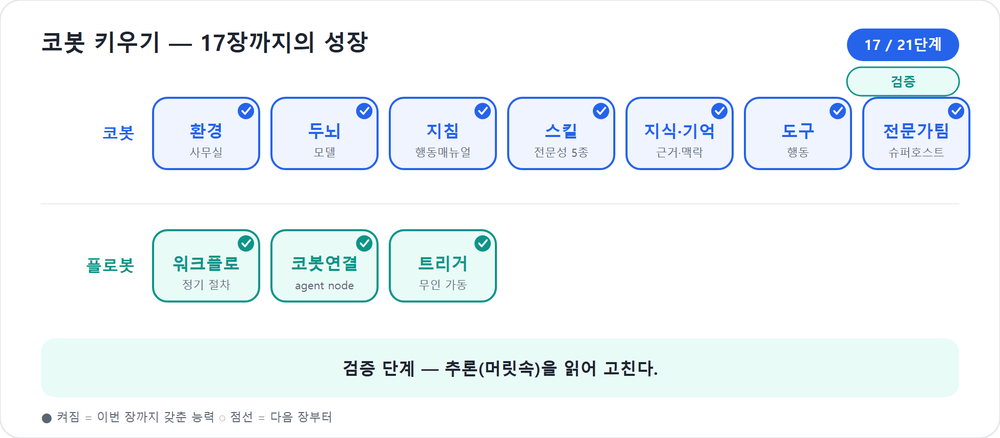

17장. 에이전트의 머릿속 들여다보기
16장에서 우리는 Preview로 코봇을 리허설 무대에 세웠다. 질문을 던졌고, 답변을 보았고, 추천 질문도 눌러 보았다. 그런데 코봇이 엉뚱하게 굴 때가 있다. “리스크 점검해줘”라고 했더니 예산표를 다시 쓰거나, Teams에 알려 달라고 했는데 실제 도구는 부르지 않고 말로만 “알렸습니다”라고 답한다. 이때 답변만 보고 고치면 십중팔구 감으로 고치게 된다.
신버전 Copilot Studio의 Preview가 중요한 이유는 답변 옆에 일하는 과정을 펼쳐 보여주기 때문이다. 책의 가이드에서 말한 것처럼 새 경험의 전체 페이지 테스트 뷰는 추론 과정(chain of thought — 코봇이 답에 이르기까지 거친 추론 과정)과 도구 실행 기록(tool calls — 도구를 실제로 불러 행동한 기록, 말과 행동의 차이)을 보여준다. 공식 Learn의 새 경험 개요도 Preview와 Evaluate를 테스트 단계로 두고, Monitor에서 활동과 접근 파일을 보게 한다. 공개 공식 세션에서는 에이전트가 MCP 서버에서 데이터를 읽고, reasoning을 거쳐, code preview tool로 Python 코드를 실행하는 과정이 눈앞에 드러나는 장면이 소개되었다. 이 장의 주제는 바로 그것이다. 코봇의 결과물이 아니라 머릿속의 흔적을 읽는 법이다.
2026년 기준 주의
여기서 말하는 추론 가시화는 새 에이전트 경험의 개발자용 Preview/테스트 관찰 흐름을 뜻한다. 최종 사용자에게 내부 추론을 노출하라는 뜻이 아니다. 실제 화면 문구와 표시 깊이는 미리보기 업데이트에 따라 달라질 수 있다.
답만 보면 못 고친다
신입사원이 보고서를 잘못 냈다고 하자. 결과물만 보면 “보고서가 이상하다”는 것밖에 모른다. 그런데 옆에서 일하는 과정을 봤다면 다르게 말할 수 있다.
- 처음 요구사항을 잘못 이해했다.
- 오래된 템플릿을 참고했다.
- 예산 파일은 열었지만 환율 기준을 빠뜨렸다.
- 마지막에 검토자를 거치지 않았다.
원인이 보이면 처방이 달라진다. 요구사항을 잘못 이해했다면 되묻는 규칙을 가르쳐야 한다. 오래된 템플릿을 봤다면 지식 소스를 정리해야 한다. 환율 기준을 빠뜨렸다면 Skill의 절차를 고쳐야 한다. 검토자를 거치지 않았다면 Workflow나 도구 설계를 봐야 한다.
코봇도 같다. 답변만 보면 “틀렸다”뿐이다. 머릿속을 보면 “어디서 틀렸는지”가 보인다. 17장의 원칙은 단순하다.
추측하지 말고 읽어라.
코봇 한마디
"제가 틀렸을 때는 답만 혼내지 말고, 어디서 길을 잘못 들었는지 같이 봐 주세요. 원인을 읽어 주셔야 저도 제대로 배웁니다!"
개발자 뷰에서 보이는 것
Preview의 개발자 관점에서 우리가 읽는 흔적은 대체로 네 종류다.
| 흔적 | 무엇을 뜻하나 | 고장 신호 |
|---|---|---|
| 추론 단계(chain of thought) | 코봇이 요청을 어떻게 이해하고 계획했는지 | 목적을 오해하거나 불필요하게 돌아감 |
| Skill 탐색 | 어떤 업무 매뉴얼을 찾아 썼는지 | 엉뚱한 Skill 호출, 호출 누락, 여러 Skill 충돌 |
| Tool calls | 어떤 도구·Workflow·연결을 실제로 불렀는지 | 말로만 처리, 권한 오류, 잘못된 도구 선택 |
| 참고 리소스 | 어떤 지식·파일·데이터를 근거로 삼았는지 | 오래된 문서, 권한 없는 자료, 근거 없는 답 |
이 네 가지는 각각 9장, 10장, 11장, 4부와 연결된다. Skill 탐색이 틀리면 9장의 description 문제다. 참고 리소스가 틀리면 10장의 지식과 기억 문제다. Tool calls가 틀리면 11장의 도구 설명·권한·입출력 문제다. 정해진 절차가 흔들리면 4부의 Workflows 설계로 넘겨야 할 수 있다.
여기서 중요한 것은 추론 로그를 소설 읽듯 감상하지 않는 태도다. 목적은 “코봇이 얼마나 똑똑한가”를 구경하는 것이 아니다. 목적은 결함 위치를 찾는 것이다. 의사가 엑스레이를 보며 뼈의 아름다움을 감상하지 않듯, 우리는 추론 흔적에서 고칠 지점을 찾는다.
함정
내부 추론이 길어 보인다고 항상 좋은 것은 아니다. 단순한 질문에 여러 Skill과 도구를 돌아다니면 오히려 설계가 흐린 신호다. “많이 생각했다”보다 “필요한 만큼만 정확히 생각했다”가 중요하다.
Tool call은 말과 행동의 차이를 보여준다
에이전트 디버깅에서 가장 위험한 착시는 “코봇이 말했다”를 “코봇이 했다”로 착각하는 것이다. 사용자가 “완성본을 Teams에 알려줘”라고 했을 때 코봇이 “Teams에 공유했습니다”라고 답했다. 정말 공유했을까. 개발자 뷰에서 tool call이 없었다면, 그것은 실행이 아니라 문장이다.
도구 호출은 코봇의 손발이 움직인 기록이다. 어떤 도구를, 어떤 입력으로, 어떤 순서로 불렀는지 봐야 한다. 새 경험의 공식 세션에서 소개된 예처럼 에이전트는 데이터를 읽고, 추론하고, 코드 도구를 사용해 파일을 만들 수 있다. 이때 우리가 보는 것은 단지 최종 Excel 파일이 아니다. MCP 서버를 조회했는지, code preview tool을 실행했는지, 실행 결과가 파일로 이어졌는지를 확인한다.
러닝 예제로 바꾸면 이렇게 된다.
사용자: “워크숍 예산안을 만들고, 팀 채널에 초안 공유해줘.”
개발자 뷰에서 기대하는 흐름은 다음과 같다.
budget-resourceSkill을 불러 예산안을 작성한다.- 필요한 경우 지식에서 회사 예산 템플릿을 참고한다.
- Teams 발송 또는 관련 Workflow 도구를 호출한다.
- 도구 호출 결과를 확인한 뒤 사용자에게 공유 완료와 위치를 알려준다.
만약 1번과 2번만 있고 3번 tool call이 없다면, 코봇은 예산안을 설명했을 뿐 공유하지 않았다. 이때 고칠 곳은 답변 말투가 아니라 도구 설명, 권한, 또는 “공유 요청이 오면 반드시 Teams 공유 도구를 호출한다”는 지침이다.
"제가 ‘했습니다’라고 말해도 손발인 도구가 움직이지 않았다면 아직 한 게 아니에요. Tool call은 제 말이 실제 행동으로 이어졌는지 보여주는 발자국입니다."
Skill을 잘못 고르는 순간
가장 흔한 문제는 Skill 선택 오류다. 9장에서 Skill의 description을 호출벨이라고 했다. 17장에서는 그 호출벨이 실제로 울렸는지 본다.
예를 들어 코봇에게 말한다.
“이번 워크숍 계획에서 위험한 점만 뽑아줘.”
정상이라면 risk-checker가 등장해야 한다. 그런데 개발자
뷰에 project-planner나 budget-resource가 먼저
보인다면 왜 그런지 살핀다. 대개 원인은 셋 중 하나다.
| 증상 | 가능한 원인 | 처방 |
|---|---|---|
| 리스크 요청에 기획 Skill이 불림 | project-planner description이 너무 넓음 |
“프로젝트를 시작할 때”로 좁힌다 |
| 예산 Skill과 리스크 Skill이 함께 흔들림 | 둘 다 “문제점 검토” 같은 말을 씀 | 예산은 비용 초과, 리스크는 발생 가능성·영향으로 분리 |
| 아무 Skill도 안 불림 | 사용자 표현과 description 사이 신호가 없음 | “위험한 점”, “리스크”, “문제 가능성” 같은 실제 표현 추가 |
좋은 description은 책상 위 라벨이다. “프로젝트 업무 지원”이라는 라벨은 너무 넓다. “일정표 작성”, “원화 예산안 산정”, “리스크 레지스터 작성”처럼 좁고 선명해야 코봇이 손을 뻗는다.
작은 사례
한 팀은risk-checker설명을 “프로젝트의 문제를 검토한다”라고 썼다. Preview에서는 일정 지연, 예산 초과, 법무 이슈가 모두 이 Skill로 몰렸다. 설명을 “발생 가능성과 영향도를 기준으로 프로젝트 실행 리스크를 식별하고 대응안을 작성한다”로 바꾸자, 코봇은 법무 판단은 범위 밖으로 돌리고 실행 리스크만 정리하기 시작했다.
지식과 기억의 흔적을 읽는다
10장에서 코봇에게 지식과 기억을 달았다. Preview의 머릿속 읽기는 그 지식이 제대로 쓰였는지 확인하는 자리이기도 하다.
코봇이 회사 워크숍 예산안을 만들 때 “지난해 워크숍 예산표”를 참고했다면 좋은 신호일 수 있다. 하지만 그 파일이 3년 전 자료라면 문제가 된다. 코봇이 “사용자는 본사 PM이다”라는 기억을 활용해 불필요한 자기소개를 줄였다면 좋은 신호다. 반대로 다른 프로젝트의 기억을 끌어와 현재 프로젝트에 섞었다면 위험하다.
지식 관련 디버깅은 다음 질문으로 시작한다.
- 코봇이 어떤 문서나 데이터 소스를 근거로 삼았는가.
- 최신 자료인가, 권한이 맞는 자료인가.
- 답변에 없는 사실을 근거 없이 덧붙이지 않았는가.
- 사용자의 기억을 과도하게 일반화하지 않았는가.
- 근거가 부족할 때 “모른다”고 했는가, 추측했는가.
지식은 코봇의 교과서다. 교과서가 틀리면 답도 틀린다. 그러나 교과서를 줬다고 늘 읽는 것도 아니다. Preview의 개발자 뷰는 코봇이 실제로 그 교과서를 펼쳤는지 보여준다.
지연시간은 또 하나의 신호다
추론을 들여다보면 시간도 보인다. 응답이 오래 걸릴 때가 있다. 복잡한 계획, 여러 도구 호출, 큰 파일 처리, 긴 대화 맥락이 있으면 느려지는 것은 자연스럽다. 문제는 단순한 일도 지나치게 오래 걸리는 경우다.
| 상황 | 해석 | 점검할 것 |
|---|---|---|
| 큰 파일을 읽고 표를 만드는 데 오래 걸림 | 자연스러운 지연일 수 있음 | 사용자에게 진행 상태를 알려주는가 |
| 짧은 인사에 여러 도구를 호출함 | 도구 설명 또는 지침이 과함 | 도구 호출 조건을 좁힌다 |
| Skill 여러 개를 불필요하게 순회함 | description 경계가 흐림 | Skill을 쪼개거나 설명을 좁힌다 |
| 복잡한 분석이 너무 얕고 빠름 | 모델·지침·평가 기준이 부족할 수 있음 | 7장 모델 선택과 Skill 절차를 재검토 |
7장에서 본 모델 선택도 여기서 다시 등장한다. 모델은 코봇의 두뇌다. 더 깊은 추론이 필요한 작업에는 더 강한 모델이 필요할 수 있고, 단순 반복 응답에는 가벼운 모델이 충분할 수 있다. 다만 9장의 기준선에서도 말했듯, 모델 셀렉터를 바꾸는 것 자체가 곧바로 비용 레버라는 뜻은 아니다. 여기서 보는 것은 품질과 지연의 관점이다. 비용은 사용량과 워크플로 실행, BYOM 같은 별도 과금 구조와 함께 21장에서 다룬다.
플로봇에게는 다른 관찰법이 필요하다
코봇은 추론하는 동료다. 그래서 머릿속을 봐야 한다. 플로봇은 다르다. 새 Workflows는 결정론적 절차다. 같은 입력이면 같은 경로로 움직이도록 설계한다. 그래서 플로봇에게 “무슨 생각을 했니?”라고 묻는 것은 어색하다. 플로봇에게 필요한 것은 추론 로그가 아니라 실행 경로, 입력·출력, 노드별 성공·실패, 재시도와 감사 기록이다.
이 차이를 헷갈리면 디버깅이 꼬인다.
| 대상 | 성격 | 보는 것 |
|---|---|---|
| 코봇(Agent) | 추론·판단 | chain of thought, Skill 선택, tool calls, 근거 |
| 플로봇(Workflow) | 결정론적 절차 | 노드 실행 결과, 입력·출력, 오류 분기, 실행 기록 |
4부에서 본 새 Workflows에는 inline node testing, version history, analytics 같은 장치가 있다. 그것은 플로봇의 관찰법이다. 17장의 머릿속 읽기는 코봇을 위한 관찰법이다. “판단은 코봇, 절차는 플로봇”이라는 문장은 디버깅에서도 그대로 유효하다.
"저는 판단하는 코봇이라 머릿속 흔적을 봐야 하고, 플로봇은 절차를 달리는 친구라 실행 기록을 봐야 해요. 서로 다른 친구에게 같은 질문을 하면 디버깅도 헷갈립니다."
머릿속 읽기 디버깅 루프
이 장의 실무 절차를 하나로 묶으면 다음과 같다.
1. Preview에서 실패 질문을 재현한다.
2. 개발자 뷰에서 추론·Skill·도구·지식 흔적을 펼친다.
3. 실패 위치를 분류한다.
- 요청 이해 문제인가?
- Skill 호출 문제인가?
- 지식 근거 문제인가?
- 도구 호출 문제인가?
- 범위/안전 문제인가?
4. 해당 자산을 최소 단위로 고친다.
5. 같은 질문을 다시 던진다.
6. 필요하면 최종 사용자 뷰에서 답변 경험을 확인한다.
7. 반복되는 실패는 18장 Evaluate 테스트 세트에 추가한다.마지막 7번이 중요하다. Preview에서 한 번 발견한 실패는 잊히기 쉽다. “이 질문은 고쳤으니 됐겠지” 하고 넘어가면 다음 변경 때 다시 깨질 수 있다. 그러므로 의미 있는 실패 질문은 18장의 테스트 세트로 승격한다. Preview는 현미경이고, Evaluate는 건강검진표다. 현미경으로 발견한 병변은 건강검진 항목에 넣어야 한다.
현장에서
팀 회의에서 “코봇이 또 틀렸어요”라고만 말하지 말고, 실패 위치를 붙여 말하라. “Skill 선택 오류입니다”, “도구 호출 누락입니다”, “지식 근거가 오래됐습니다”, “범위 밖 질문에 답했습니다”처럼 분류하면 회의가 짧아지고 처방이 빨라진다.
내부 정보 노출을 조심한다
머릿속을 볼 수 있다는 것은 강력하지만, 그만큼 조심해야 한다. 개발자 뷰에는 도구 이름, 파일 이름, 데이터 출처, 중간 판단이 보일 수 있다. 이것을 캡처해 외부에 공유하거나, 최종 사용자 답변에 그대로 노출하면 안 된다. 특히 고객 정보, 임직원 정보, 예산 자료, 계약 자료를 다루는 코봇이라면 더 조심해야 한다.
원칙은 간단하다.
- 개발자 뷰는 만드는 사람과 승인된 검토자만 본다.
- 캡처와 공유는 조직의 보안 정책을 따른다.
- 민감한 파일명과 데이터가 로그에 남을 수 있음을 전제로 테스트한다.
- 최종 사용자 답변에는 필요한 결과와 근거만 남기고 내부 추론은 숨긴다.
- 평가용 테스트 세트에도 민감정보를 그대로 넣지 않는다.
이 주제는 21장의 거버넌스·ALM에서 더 크게 다룬다. 지금은 “보이는 것은 관리해야 한다”는 감각만 잡아두자.
핵심 정리
| # | 요점 |
|---|---|
| 1 | Preview의 개발자 뷰는 코봇의 추론 단계, Skill 탐색, tool calls, 참고 리소스를 보여주는 디버깅 렌즈다. |
| 2 | 답만 보면 “틀렸다”만 알지만, 머릿속을 보면 어디서 틀렸는지 알 수 있다. 추측하지 말고 읽어야 한다. |
| 3 | Tool call은 말과 행동의 차이를 보여준다. 실행이 필요한 요청은 실제 도구 호출 기록으로 확인한다. |
| 4 | Skill 선택 오류는 대개 description이 넓거나 겹친 탓이다. 호출 신호와 산출물 기준을 좁힌다. |
| 5 | 지식과 기억의 흔적을 읽어 최신성, 권한, 근거, 추측 여부를 점검한다. |
| 6 | 지연시간은 설계 신호다. 단순한 일에 과도한 추론·도구 호출이 붙으면 경계를 좁힌다. |
| 7 | 코봇은 추론을 보고, 플로봇은 실행 경로를 본다. 두 관찰법을 섞지 않는다. |
자주 묻는 질문(FAQ)
| 질문 | 답변 |
|---|---|
| chain of thought를 최종 사용자에게 보여줘도 되나요? | 아니다. 개발자 디버깅용으로 보고, 최종 사용자에게는 답변과 필요한 근거만 보여주는 것이 안전하다. |
| tool call이 없는데 코봇이 “완료했다”고 답했어요. | 실행이 아니라 말일 가능성이 높다. 도구 설명, 권한, 호출 조건, 지침을 점검하라. |
| Skill이 자꾸 엉뚱하게 불립니다. | description이 넓거나 다른 Skill과 겹쳤을 가능성이 크다. “언제, 무엇을, 어떤 산출물로”를 좁혀 쓴다. |
| 응답이 느리면 모델을 바꿔야 하나요? | 먼저 불필요한 Skill·도구 호출이 없는지 본다. 그다음 7장의 모델 선택을 품질·지연 관점에서 재검토한다. |
| 플로봇도 머릿속을 볼 수 있나요? | 플로봇은 결정론적 Workflows라 추론 머릿속이 아니라 노드 실행 결과와 오류 분기를 본다. |
다음 장에서는
이 장에서 우리는 실패의 원인을 읽는 법을 배웠다. 그러나 Preview와 머릿속 읽기는 여전히 사람이 몇 가지 질문을 직접 던지는 방식이다. 이제 필요한 것은 반복 가능한 시험지다. 18장에서는 Evaluate 탭에서 테스트 세트를 만들고, 품질을 숫자로 측정하고, 변경 전후 회귀를 막는 방법을 다룬다.
실습 — 코봇 키우기 17단계: 머릿속(추론)을 읽는다

〔이어받기〕 16장에서 겉으로 검증한 코봇. 이번엔 왜 그렇게 답했는지 속을 본다.
16-a. 추론을 펼친다. 코봇이 “리스크 점검”에 엉뚱한
스킬을 불렀다면, 추론 과정(chain of thought)을 펼쳐 왜
risk-checker 대신 다른 스킬을 골랐는지 읽는다.
16-b. 원인을 고친다. 십중팔구 description이 겹치거나 모호하다 → 경계를 더 또렷이 적는다.
16-c. 재확인한다. 재시도에서 올바른 스킬이 불리는지 본다. (플로봇은 늘 같은 길 — 들여다볼 머릿속이 없다.)
〔성장〕 코봇은 추론을 읽어 고친다 — 추측이 아니라 근거로 디버깅. 지연·추론 깊이는 7장 모델 선택의 결과임도 체감한다. 〔검증 포인트〕 잘못된 선택의 원인(겹치는 description)을 짚어 고치고, 재시도에서 올바른 스킬이 불리면 통과.